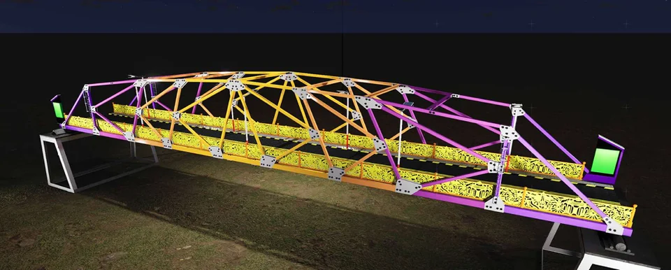
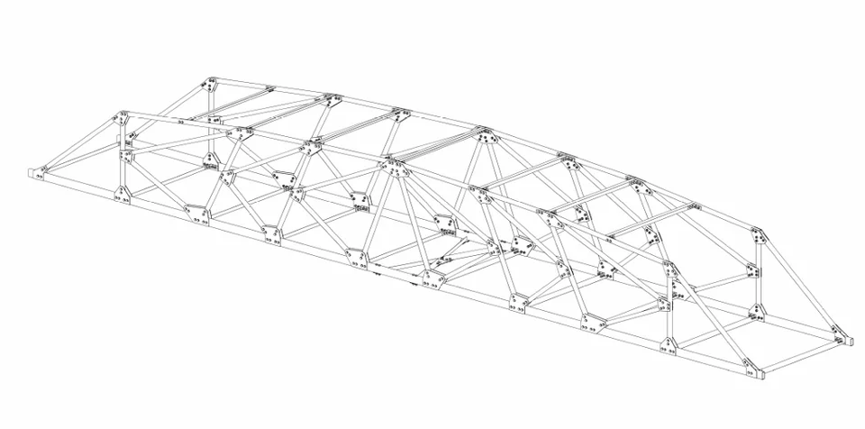
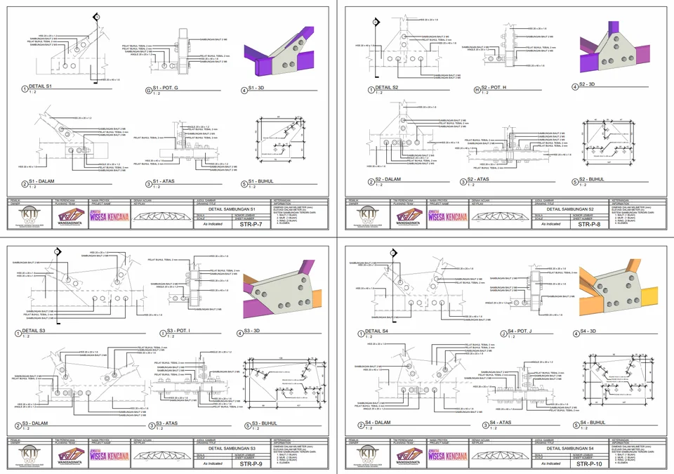

Wisesa Kencana Bridge —
KJI 2025
A bridge design submitted for Kompetisi Jembatan Indonesia (KJI) 2025 — the most prestigious national bridge design competition in Indonesia, organized under the Ministry of Public Works.

About KJI
Kompetisi Jembatan Indonesia (KJI) is the national flagship bridge engineering competition in Indonesia, drawing teams from universities across the country. The competition tests students' ability to design, analyze, and physically construct scale models of bridges under competitive conditions.
KJI evaluates entries on structural efficiency, design innovation, construction quality, and presentation — making it a comprehensive test of bridge engineering capability.
Design: Wisesa Kencana Bridge
The Wisesa Kencana bridge design for KJI 2025 was developed through rigorous structural iteration, balancing aesthetic intention with the competition's strict performance requirements. The design underwent multiple rounds of analysis and refinement to meet the loading and deflection criteria specified by the competition rules.
Process
- Conceptual design and structural system selection based on competition requirements
- Iterative structural analysis using SAP2000 to optimize member sizing
- 3D BIM Model for real case bridge and prototype bridge
- Quantity takeoff and cost estimation
- Fabrication and construction methods planning for prototype bridge

